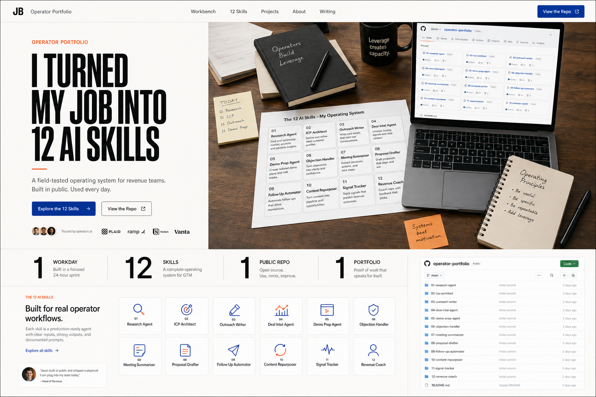

Daily Work Capture
Turn a messy day into a clean task log.
Operator Portfolio
A field-tested challenge for people who know their work deeply and want to turn one real day into reusable AI leverage.

Built from real work, not a job description.
Reusable instructions with inputs, outputs, and safety rules.
A clean filing cabinet others can copy and improve.
Proof of work that explains what each agent does.
The 12 AI Skills
Each skill has a job pain, an input, an output, a tool boundary, and a safety rule. The goal is simple: stop starting from a blank page for work you repeat every week.
Browse the skill folderTurn a messy day into a clean task log.
Find the work worth automating first.
Convert notes into owners and next steps.
Draft follow-ups without sending anything.
Explain business systems in plain English.
Turn report numbers into useful action.
Prepare a direct, respectful coaching talk.
Turn repeatable work into a usable guide.
Flag risky claims before content ships.
Test AI tools and send useful feedback.
Turn real work into public learning.
Try the intimidating tool and form an opinion.
The Challenge
Track meetings, reports, decisions, follow-ups, research, and handoffs.
Give each skill a purpose, input, output, tool boundary, and safety rule.
Push the repo, build the site, and explain each skill as an agent.
Try AI tools in your field, message founders, and share what you learned.
Proof Of Work
The package gives your community the full path: document the workday, pick the repeatable tasks, write the skills, build the site, publish the repo, and share the lesson.